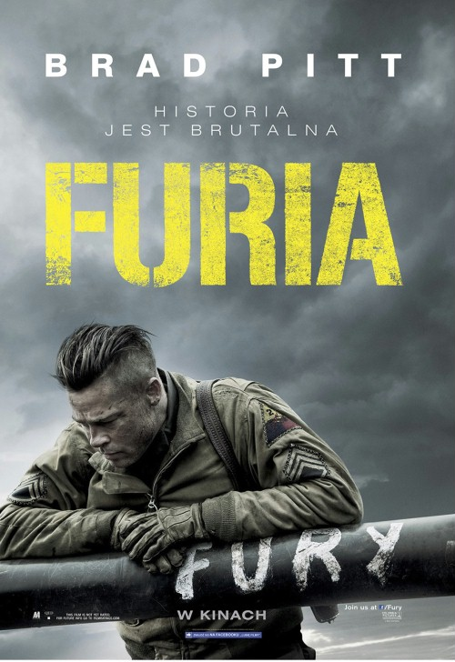

Ocena filmu "FURIA"
Trochę trudno podejść do Furii całkowicie obiektywnie. My, Polacy, jakby nie patrzeć, od maleńkości taplamy się w toposie martyrologii. II wojna światowa przedstawiana jest w naszym kraju jako wielka próba, a nawet „Wielka Próba”, w czasie której nasi szlachetni partyzanci dawali odpór wrogim, bestialskim nazistom (oczywiście ginąc śmiercią bohaterską i czystą, za to prawie nigdy nie hańbiąc się zabijaniem). Z drugiej strony, karmiono nas produkcjami pokroju Czterech pancernych i psa, w których Janek Kos - generyczny polski żołnierz, młody, piękny, sympatyczny – „strzelał czołgiem” w towarzystwie wesołej i barwnej ferajny, z psem włącznie.
A tu proszę. Załoga czołgu "Furia" wraca z misji w niepełnym składzie.
Autor: Dagmara Trembicka-Brzozowska


Ostatnia aktualizacja: 17.11.2019